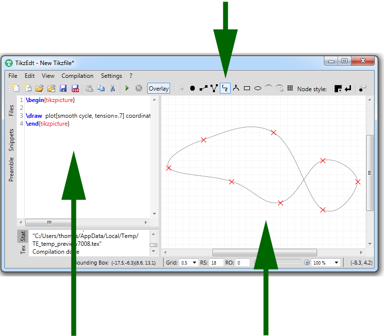
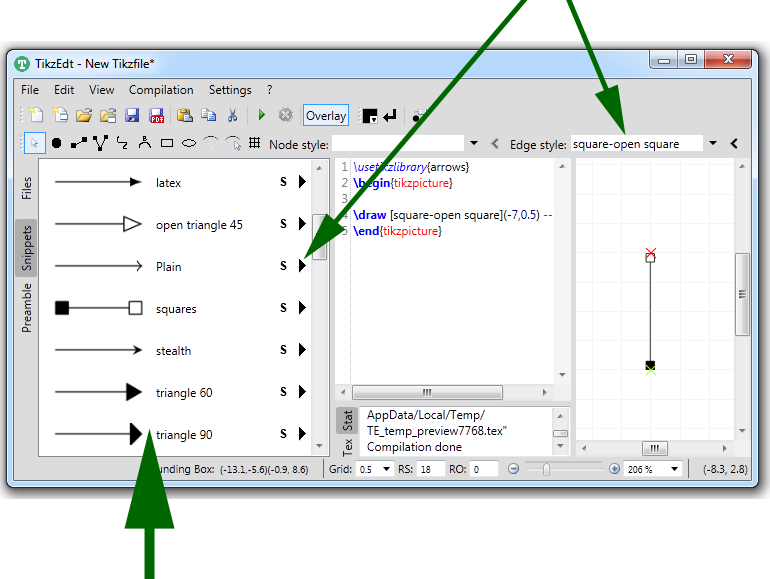
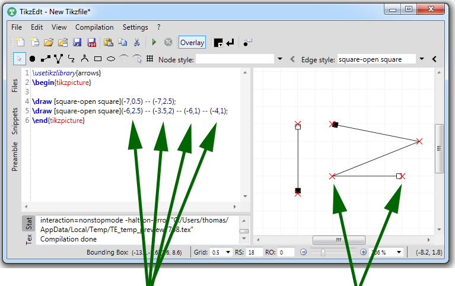

|
TikzEdt A semigraphical Tikz editor |
Quick Tour
| Instant Preview | |
|---|---|
 |
|
| Type some Tikz code. | Instantly see the compiled result. |
| Wysiwyg Editing | |

|
|
| Watch the Tikz code update itself. | Edit some coordinates with the mouse. |
| Wysiwyg Editing II | |
| Choose some drawing tool. | |
|  | |
|
|
Draw something. |
| Styles | |
| You can customize the basic WYSIWYG drawing tools by selecting or typing some styles or Tikz attributes. | |

|
|
| The styles/attributes will automatically be applied to the objects you draw. | |
| The snippet library | |
| Pressing the "Play" button selects an attribute for use with the WYSIWYG drawing tools. | |
|  | |
| TikzEdt contains a collection of predefined code snippets, attributes and styles. You can extend it by defining your own. | |
| How it works | |
|  | |
| TikzEdt contains a parser that is able to understand the basic structure of Tikz documents and extracts editable coordinates. | The extracted coordinates are drawn as an overlay on top of the pdf compiled from your Tikz code. You can edit the coordinates by dragging the red crosses with your mouse. |
 Note: Parsing Latex/Tikz code is not a simple task. Tikzedt can understand a couple of Tikz constructs, in particular coordinate transformation and polar coordinates. But, yes, it can be fooled.... see the documentation for more details. (In the worst case, you may always turn off the parser and use TikzEdt as a text editor with instant preview.)
Note: Parsing Latex/Tikz code is not a simple task. Tikzedt can understand a couple of Tikz constructs, in particular coordinate transformation and polar coordinates. But, yes, it can be fooled.... see the documentation for more details. (In the worst case, you may always turn off the parser and use TikzEdt as a text editor with instant preview.)
|
|
| Main |
| Download |
| Quick Tour |
| Use Cases |
| Documentation |
| Links and Contact |

|